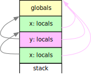
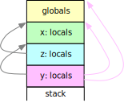
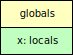
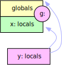
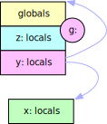
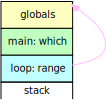
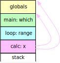

First-Order Functions
Stack versus Closure
Chapter seven explained how to perform type checking in the actions of syntax analysis and how to compile global and nested functions into machine instructions for a stack machine simulated in JavaScript.
This chapter investigates the use of functions as parameter
and variable values and as function results.
If function definitions can be nested
the current stack machine only supports functions as parameters.
Other uses of functions as values require a significant change to the stack machine's memory management.
Appendix B summarizes the evolution of the stack machine and
appendix C outlines the changes to the infrastructure for code generation.
All classes are available from the module Eight
which is built into the practice page.
First-Order Functions
The term first-order functions refers to the fact that they can be passed as function arguments, stored in variables, called, and returned as function results — in other words they can be used just like numbers or any other value which is manipulated by a program.
Consider the following scenario for global functions with block scopes as implemented previously:
var global;
function x (p) begin var v; ... end x;
function y (q) begin var w; ... end y;
...
There is a global frame and —
depending on call history —
there can be frames for multiple nested calls to x and y:
|  |
The dynamic link (frame pointers) is shown at left, the static link (visibility) at right. In addition to the global variables each activation of a global function can only access its own parameters and local variables, i.e., the stack of frames can handle any visibility issues no matter where a global function is called from.
Global functions are first-order functions. The start address of a global function represents the function as a value — no additional information is required.
As an alternative, consider the following scenario for nested functions as implemented previously:
var global;
function x (p) begin var v;
function y (q) begin var w; ... end y;
... z(y); ...
end x;
function z (y) begin ... y(...); ... end z;
... x(...); ...
Assume there is a call sequence through x to z
where x passes function y as a parameter
and where z then activates y.
|  |
The diagram shows at right the display for the activation of y.
It has access to the local information in x and to the global variables
— because these are visible at compile time —
and x is still active on the stack because it awaits a return from z
which in turn awaits a return from y.
As long as nested functions are only passed as parameters there are no problems if the frames are stacked. However, passing a function as a value requires both, the address of the function and the display on which the function value can be called, so that a proper display can be constructed to activate the function.
Finally, consider the same setup for nested functions as before
var g;
function x (p) begin var v;
function y (q) begin var w; ... end y;
... return y
end x;
function z (y) begin ... g(...); ... end z;
... g = x(...); ... z(...); ...
but this time assume that a call to x returns the function y
to the global variable g and during a later call to the function z
the function y is activated by calling on g.
|  |  |  |
The left picture shows the frame for a call to x.
The center picture shows the display which any activation of y will have —
the display must include a frame for x.
This information would be assigned to a more global variable g.
The right picture shows the situation for a call to z and from there
by way of the variable g to y. There must be frames
for z and y, but there also has to be the frame for x
which was assigned to g together with the address of y —
and this time the frame for x is no longer on the stack!
This effect is known as closure and it poses a problem
if a function defined at a deeper level such as y is passed outward,
e.g., to g.
The picture at right shows that nested first-order functions cannot be supported with the strict stack discipline which has been used for frames so far. If functions can be passed to lower depths, higher depth frames still have to exist until they can no longer be referenced — they need to be garbage-collected.
This chapter will implement little languages for each of these three scenarios.
Function Typing
Functions and numbers are very different kinds of values, e.g., functions can be called, numbers can be added. When functions are called the arguments have to match expectations, e.g., a parameter can only be called if the corresponding argument is a function.
If functions are values the little language must support an infinite number of types:
-
functions with zero to many parameters and perhaps a result
-
each of which can be a number or a function
-
which in turn can have parameters and might have a result, etc.
Fortunately, this infinite set of types can be described with a small grammar such as the following:
prog: [ typedcls ] [ vars ] funs;
typedcls: { 'type' typedcl [{ ',' typedcl }] ';' };
typedcl: Name '(' [ types ] ')' [ ':' typename ];
types: typename [{ ',' typename }];
typename: Name | 'number';
Type declarations are global and first in a program (line 1 above).
The literal type introduces one or more type declarations, separated by commas
and terminated with a semicolon (line 2).
Each declaration describes a function type and starts with the type name (line 3).
Parentheses enclose the list of zero or more parameter type names (line 4),
and a colon precedes the result type name if any.
The literal number is used to indicate a number as a parameter or result type (line 5).
Type names need not be different from other global names because they will be stored in a separate type table. In a program, context determines if a name refers to a type.
type Euclid (number, number): number, Sum (number, number): number;
The example above declares each, Euclid and Sum, as a function type
with two numbers as parameters and a number as result.
The little typing (sub-)language defined by the grammar above is restrictive:
-
The number and type of parameters for a function are fixed, i.e., the exact sequence of parameters of a function is declared.
-
Types are unique based on their names, i.e., there is type identity, not type equivalence. The
EuclidandSumfunction types above, both, require two numbers as arguments and return a number, but they are considered different types. -
As a benefit, type names can be used before they are declared, i.e., there is no need for forward type declarations, and recursion is allowed, e.g., a function can be typed to return itself.
-
numberis predefined and could be replaced by a richer set of types such as string, integer, etc.mainis predefined as a function without parameters and anumberresult. All other type names must eventually be declared.
Once function types can be declared, variables and functions in the little language can be strongly typed, e.g.,
vars: 'var' varname [{ ',' varname }] ';';
varname: Name [ ':' type ];
type: Name | 'number';
funs: { fun };
fun: head parms [ block ] ';';
head: 'function' Name;
parms: '(' [ names ] ')' [ ':' Name ];
Variables are numbers by default, but in a definition a variable name can be explicitly typed by appending a type name (line 2 above).
Similarly, a function can be typed by appending a type name to the parameter list (line 7).
If there is no explicit type name, the function name is the type name
and the type must be declared — unless it is main.
Parameters are implicitly typed because a function type declaration includes types for the parameters and the result.
For example:
type Euclid (number, number): number;
var e: Euclid;
function euclid (x, y): Euclid begin ... return 18; ... end;
Given these definitions,
the assignment e = euclid; would be acceptable.
Global First-Order Functions
In this section the little language with global functions and block scopes will be extended to allow functions as variable values, argument values, and function results. Changes to the grammar can be seen on this page, new stack machine and action methods can be seen in the method browser.
Example 8/01
prints a list of values for two global functions, square() and cube():
type Calc (number): number;
function square (x): Calc begin square = x * x end;
function cube (x): Calc begin cube = x * x * x end;
Two more global functions implement a loop to print a list of function values:
up() is used if the function argument increases along the list,
down() is used otherwise.
They differ only in the loop condition.
Here is up():
type Printer (Calc);
var from, to, step;
function up (calc): Printer begin
var f;
f = from;
while f <= to do
print f, calc(f);
f = f + step
od
end;
Unfortunately, in this little language there is no closure, i.e., the loop range has to be captured in global variables.
One more global function, loop(), initializes the loop range
and returns the appropriate Printer function:
type loop (number, number, number): Printer;
function loop (f, t, s) begin
loop = up; from = f; to = t; step = s;
if step < 0 then loop = down
else if step = 0 then to = f; step = 1 fi
fi
end;
Note that loop() shares nothing with the function
which will be tabulated.
Only the main program puts it all together
by creating a Printer with loop()
and immediately calling the resulting function
with the function to be evaluated:
function main () begin
loop (1, 5, 1) (square);
loop (10, 7, -1) (cube);
loop (6, 7, 0) (square)
end;
Check out example 8/01 which demonstrates functions used as parameters and function results:
-
Note that the type declarations have to be at the beginning of the program. Compare the loop conditions in
up()anddown(). -
Press to represent and check the grammar,
-
press to compile the program, and
-
press to see the result.
-
Can you assign the loops to variables and use each twice?
Grammar Modifications
The compilers developed in example 7/09 and example 7/13 support nested variable definitions but the latter supports nested function definitions. Therefore, a compiler for global first-order functions is best developed as a function to extend the compiler from example 7/09.
Most changes to the grammar have already been discussed above:
-
the typing (sub-) language is included up front,
-
function definitions are global and can include a type name, and
-
variable names can be defined in any scope and can include a type.
The main program in example 8/01 showed that it is convenient if a function result can be called immediately:
loop (1, 5, 1) (square);
For the grammar this means that a function name can be followed by several sets of arguments:
assign: symbol action;
action: store | call;
store: '=' sum;
call: { args };
name: symbol [{ args }];
symbol: Name;
At the statement level (line 1 above) a function name must be followed by at least one set of arguments (line 4) because a function name alone cannot be a statement. In an expression (line 6), a function name without arguments refers to the function as a (constant) value, a function name with one or more sets of arguments denotes the return value of — potentially cascaded — function calls.
Types
Type declarations are global in the little language and they are stored in a separate type table:
const Global01 = superclass => class extends superclass {
get typeSymbols () { return this.#typeSymbols; }
#typeSymbols = new Map();
A type description contains the type name, a list of parameter types, and a result type if any:
get Type () { return this.#Type ??= class extends super.Symbol {
parms = []; // list of parameter types, `null` for 'number'
returns; // result type if any
get isFun () { return this.parms !== null; }
constructor (owner, name, parms, returns) {
super(owner, name);
this.parms = parms; this.returns = returns;
}
toString () { /* ... */ }
};
}
#Type;
Two types are predefined and created when the singleton object with action methods is constructed:
get numberType () { return this.#numberType; }
#numberType;
get mainType () { return this.#mainType; }
#mainType;
constructor (parser, machine) {
super(parser, machine ?? new (Machine01(Seven.Machine06))());
this.typeSymbols.set('number',
this.#numberType = new this.Type(this, 'number', null, null));
this.typeSymbols.set('main',
this.#mainType =
new this.Type(this, 'main', [ ], this.numberType));
}
numberType is a scalar type,
i.e., it has null in place of a parameter list (line 10 above).
mainType is a function type
with an empty parameter list and number as a return type (lines 12 and 13).
The actions for the typing (sub-)language fill and check the type table:
// typename: Name | 'number';
typename (name) { return name; }
// types: typename [{ ',' typename }];
types (typename, many) {
return [ typename ].
concat(many ? many[0].map(list => list[1]) : []);
}
// typedcl: Name '(' [ types ] ')' [ ':' typename ];
typedcl (name, lp, types, rp, returns) {
if (this.typeSymbols.get(name))
this.parser.error(`${name}: duplicate type`);
else
this.typeSymbols.set(name, new this.Type(this, name,
types ? types[0] : [], returns ? returns[1] : null));
}
typename() returns a name (line 2 above)
and types() returns a list of one or more names (lines 6 and 7).
typedcl() checks if a name has already been declared (line 12)
and if not builds a new entry in the type table (lines 15 and 16).
At this point all the types, including number, are represented as strings.
Once all declarations have been recognized
the type descriptions have to be modified so that they reference each other
and they have to be checked for completeness:
// typedcls: { 'type' typedcl [{ ',' typedcl }] ';' };
typedcls (some) {
this.typeSymbols.forEach(sym => { // check and translate types
if (sym.isFun) { // avoid non-functions
const check = name => { // return type description for name
const type = this.typeSymbols.get(name);
if (type) return type;
this.parser.error(`${name}: not a type`);
return this.numberType; // patch
};
sym.parms = sym.parms.map(check); // convert to symbols
if (typeof sym.returns == 'string')
sym.returns = check(sym.returns);
}
});
}
typedcls() looks at every function type in the type table (lines 3 and 4 above)
and replaces the parameter and return type names by references to their descriptions (lines 11 to 13).
Undefined type names are reported and replaced by references to number to let recognition continue (lines 6 to 9).
Variables
Variables now have a type which is set by an action when a variable is defined:
// type: Name | 'number';
type (name) {
const type = this.typeSymbols.get(name);
if (type) return type;
this.parser.error(`${name}: not a type`);
return this.numberType;
}
// vars: 'var' varname [{ ',' varname }] ';';
// varname: Name [ ':' type ];
varname (...arg) {
let [ name, type ] = arg;
type = type ? type[1] : this.numberType;
this._dcl(this._alloc(name), true).type = type;
}
type() checks that a type name has been declared (lines 2 to 7 above).
If not, it is reported as an error and number is substituted to let recognition continue (line 6).
varname() creates the variable description,
enters it into the symbol table, and sets a .type property,
by default numberType (lines 12 and 13).
Var, the class of variable descriptions, has to be extended:
get Var () { return this.#Var ??= class extends super.Var {
type; // variable's type
storeOk (type) { // [replace] check type
if (this.type == type) return true;
this.owner.parser.error(`${this.name}: ` +
`expects ${this.type}, not ${type}`);
return false;
}
call () { this.load(); this.owner.machine.gen('CallValue'); }
toString () { /* ... */ }
};
}
#Var;
Assignment is only allowed if the value to be stored and the variable have identical types (lines 4 to 9 above).
call() implements code generation if a variable is called as a function (line 11):
load() pushes the variable's current value onto the stack and
a new instruction
CallValue
branches to that value and replaces it on the stack by the return address,
similar to Call.
Functions
Functions now have a type which is set in the function declaration because it has to be known even for a forward declaration:
// fun: head parms [ block ] ';';
// head: 'function' Name;
// parms: '(' [ names ] ')' [ ':' Name ];
parms (lp, names, rp, name) { // funtion's name is default type
this.funct.setParms(name ? name[1] : this.funct.name);
}
The function type name is recognized together with the parameter list.
It is either an explicit type name or the name of the function (line 5 above).
The parms() action
calls setParms() to store the type as part of the description of the
current function.
Fun, the class of function descriptions, has to be extended:
get Fun () { return this.#Fun ??= class extends super.Fun {
type; // function's type
loads = []; // forward references to push
setParms (name) { // [replace] sets parameter types
this.parms = this.locals.size; // may be wrong, see below
this.size += 2; // leave room for old pc and old fp
this.addr = this.size ++; // leave slot for result
try {
const type = this.owner.typeSymbols.get(name);
if (!type) throw `${name}: not a type`;
if (!type.isFun) throw `${name}: not a function type`;
if (this.type && this.type != type)
throw `${name} ${this.name}: ` +
`previously declared as ${this.type.name}`;
if (type.parms.length != this.locals.size)
throw `${name} ${this.name} arguments: expects ` +
`${type.parms.length}, receives ${this.locals.size}`;
this.type = type;
let n = 0; // Map.forEach does not provide n
this.locals.forEach(parm => parm.type = type.parms[n ++]);
} catch (e) {
if (e instanceof Error) throw e; // shouldn't happen
this.owner.parser.error(e); // report an error
}
}
// ...
};
}
#Fun;
setParms() is extended to set the function's type (line 19 above)
— which must match a previous declaration, if any (line 13) —
and assign types to the parameter names.
When setParms() is called the symbol table .locals contains the parameter descriptions.
Map's forEach() visits entries in insertion order,
corresponding to the types in the function type's parameter list, if any.
The types are copied to the parameter descriptions (lines 20 and 21 above).
Errors are reported and number is substituted as necessary to continue recognition.
The function type has to be checked when a return value is assigned:
storeOk (type) { // [extend] checks type
try {
if (this.type.returns) { // return value expected?
if (!type) // no return value?
throw `must return ${this.type.returns}`;
else if (this.type.returns != type) // wrong type?
throw `expects ${this.type.returns}, not ${type}`;
} else if (type) // return value not expected?
throw `doesn't return a value`;
return super.storeOk(); // inside function?
} catch (e) {
if (e instanceof Error) throw e; // shouldn't happen
this.owner.parser.error(`${this.name}: ${e}`);
return false;
}
}
storeOk() now has to be called with the type of the value to be returned
which has to match the expected returns type (lines 3 to 9 above)
and, as before, assignment is only allowed within the current function (line 10).
In an expression a function name can be specified without arguments
to denote the function as a value which might be assigned
or passed as an argument, i.e., just like
Var, the class of variable descriptions,
Fun, the class of function descriptions,
has to support a load() operation which generates code to put a function value onto the stack.
At this point, for global functions, this means that the function's start address has to be
pushed onto the stack (line 3 below) — even if it is not yet known:
load () { // generates 'Push start'
if (typeof this.start == 'number')
this.owner.machine.gen('Push', this.start);
else
this.loads.push(this.owner.machine.code.push(null) - 1);
}
end () { // [extend] resolves loads
const push = this.owner.machine.ins('Push', this.start);
this.loads.forEach(p => this.owner.machine.code[p] = push);
this.loads.length = 0;
super.end();
}
Just as for the
call() and return() methods,
if the address is not yet known,
load() reserves a code memory slot and stores the address in a list (line 5 above)
so that the correct instruction can be inserted by end() when the function definition is completed (line 10).
Names
A name can be recognized as the source of a value or as the target of an assignment:
// symbol: Name;
// name: symbol [{ args }];
name (sym, args) {
const context = this.context; this.context = null;
if (args) return context.type;
sym.load();
return sym.type;
}
// assign: symbol action;
// action: store | call;
// store: '=' sum;
store (_, sum) {
if (this.context.symbol.storeOk(sum))
this.context.symbol.store();
}
// call: { args };
Chapter seven discussed that the
symbol() action
sets up a context with a reference to the Name,
intended to be available during recognition of args or store
and discarded by the actions for either name or assign.
Chapter seven also indicated that for type checking during recognition the actions have to indicate what type results from the generated code.
Therefore, if there are no arguments applied to a Name,
the name() action
asks the Name's description to generate code to push the appropriate value onto the stack (line 6 above)
and it returns the type declared for the Name (line 7).
If there are arguments, the args() action
is responsible for leaving a result type in the context
which name() will return (line 5).
Note that both, a variable or a function description, have a .type property
and support a load() operation.
A result type will eventually be returned by the action for sum
and the store() action
passes it to storeOk() to check if an assignment is possible (line 14)
which store() will generate code for (line 15).
Again, a variable or a function description, both, support the storeOk() and store() operations.
The main program of example 8/01 contains cascaded function calls, e.g.,
loop (1, 5, 1) (square);
In this case there are two argument lists which have to be recognized by two successive
args() actions — and there could be many moreL
// args: '(' [ sums ] ')';
args (lp, sums, rp) {
const args = sums === null ? [ ] : sums[0]; // list of types
const type = 'type' in this.context ? // chained call if true
this.context.type : this.context.symbol.type;
try {
if (!type) throw 'too many argument lists';
if (!type.isFun) throw 'not a function';
if (type.parms.length != args.length)
throw `arguments: ${type.parms.length} expected, ` +
`${args.length} specified`;
const errors = [];
type.parms.forEach(
(parm, n) => { if (parm != args[n]) errors.push(
`argument ${n+1} is ${args[n].toString()}, ` +
`not ${parm.toString()}`
); });
if (errors.length) throw errors.join('; ');
if ('type' in this.context) { // chained call
this._lift(args); // move function address past arguments
this.machine.gen('CallValue'); // call address on stack
} else this.context.symbol.call(); // call function/variable
} catch (e) {
if (e instanceof Error) throw e; // should not happen
this.parser.error(`call to ${this.context.symbol.name}: ${e}`);
}
this.context.type = type ? type.returns : null; // result type
}
args() is called after
sums() has generated code to push argument values onto the stack
and it is responsible for type checking (lines 3 to 18 above),
generating the actual function call (lines 19 to 22),
and determining the result type (line 27).
As discussed above, the sum() action will return
the type of the value which the generated code produces.
Therefore, sums() will return a list of types
and args() matches this list to the parameters
which the function expects (lines 13 to 17).
The first of a sequence of argument lists is applied to a name
and context.symbol contains the description of the name —
which can be a variable or a function,
but which must have a function type.
For subsequent argument lists,
context.type must contain the type
which the preceding argument list produced.
Therefore, args() stores the result type
as context.type for next time (line 27)
and fetches its function type from context.type, if any, or from the name
described in the context (lines 4 and 5).
Given that type, parameter checking is straight-forward (lines 7 to 18).
The first of a sequence of argument lists is applied to a name,
i.e., code for the actual function call is generated by the call()
operation of the name's description (line 22) —
both, variables and functions now support this operation.
For each subsequent argument list the code generated for the preceding argument list
has (hopefully) resulted in a function value on top of the stack.
Unfortunately, code for the subsequent argument list
will push the argument values on top of that function value.
Therefore, the function value has to be lifted to the top of the stack (line 20)
where the CallValue instruction expects it (line 21).
_lift (args) {
if (args.length) this.machine.gen('Rotate', args.length);
}
A new Rotate instruction may be needed
to move the function value past the argument values to the top of the stack (line 2 above).
This part of args() is encapsulated
as a separate method so that it can be replaced
later.
Type Checking
The grammar guarantees that the type table is built and checked
before any code is generated;
therefore, the action methods can ensure that function and number values are only used as intended.
Similar to the type checking implementation in example 7/02,
actions involved in expressions again have to report and check at compile time
what types of values will be produced at runtime:
cmp: sum rel;
rel: eq | ne | gt | ge | lt | le;
eq: '=' sum;
...
sum: product [{ add | subtract }];
add: '+' product;
...
product: signed [{ multiply | divide }];
multiply: '*' signed;
...
signed: [ '-' ] term;
term: input | number | name | '(' sum ')';
input: 'input' [ Number ];
number: Number;
name: symbol [{ args }];
For the grammar excerpt above,
recognition succeeds and the actions are called in order from bottom to top.
input(),
number(), and
name() report to
term() which, together with
signed(), eventually reports to
product() and from there to
sum()
which reports to the comparisons for the control structures
and to the print and return statements.
Analysis is simpler than in example 7/02
because the arithmetic and comparison operations cannot be applied to functions
and there are no cast operations which could modify function types.
For the most part, the action methods have to return number or function types
and flag illegal operations.
input() and
number() return
numberType.
As discussed above,
name() can return a function type description.
term()
returns the type received from it's descendants (line 2 below):
// term: input | number | name | '(' sum ')';
term (...val) { return val.length > 1 ? val[1] : val[0]; }
// signed: [ '-' ] term;
signed (minus, term) {
if (minus && term != this.numberType)
this.parser.error(`cannot apply '-' to ${term.toString()}`);
else this.parser.call(this, super.signed, minus, term);
return term;
}
signed() accepts any type
but complains if a minus sign is applied to a function (line 6 above);
code generation for number values is always delegated to the superclass (line 8).
// multiply: '*' signed;
multiply (_, signed) {
if (signed != this.numberType)
this.parser.error(`cannot apply '*' to ${signed.toString()}`);
else this.parser.call(this, super.multiply);
}
// product: signed [{ multiply | divide }];
product (signed, many) {
if (many && signed != this.numberType)
this.parser.error(`cannot apply '*' or '/' ` +
`to ${signed.toString()}`);
return signed;
}
multiply() and the other arithmetic operators
complain if they have a function as a right operand (line 3 above);
they don't have to return anything.
product() and
sum()
return a number or function type (line 13)
but complain if a function is the left operand in an arithmetic operation (line 10).
Finally, comparisons complain if they are applied to functions:
// cmp: sum rel;
cmp (sum, _) {
if (sum != this.numberType)
this.parser.error(`cannot compare ${sum.toString()}`);
}
// rel: eq | ne | gt | ge | lt | le;
// eq: '=' sum;
eq (_, sum) {
if (sum != this.numberType)
this.parser.error(`cannot apply '=' to ${sum.toString()}`);
else this.parser.call(this, super.eq);
}
There is a small amount of semantic analysis for statements as well.
As discussed above,
sums()
is extended to return a list with the type of each sum (lines 3 and 4 below):
// sums: sum [{ ',' sum }];
sums (sum, many) {
return [ sum ].
concat(many ? many[0].map(list => list[1]) : []);
}
// print: 'print' sums;
print (p, sums) {
if (!sums.every(sum => sum == this.numberType))
this.parser.error('can only print numbers');
this.parser.call(this, super.print, p, sums.length);
}
// return: 'return' [ sum ];
return (_, sum) {
if (this.funct.storeOk(sum ? sum[0] : null))
if (sum)
(this.funct.store(), this.machine.gen('Pop'));
this.funct.return();
}
};
The print action
restricts printing to numbers (line 9 above)
and then delegates to the superclass (line 11).
The return action,
just like the store action,
calls storeOk()
to see if a result value has the expected type
and is even expected (line 16),
and it calls store()
to generate code to store the value, if any, in the result slot (line 18).
Bottom line: the more types the more ways to make mistakes in a program, but also more chances to catch mistakes by type checking. And — little things to be thankful for — the control structures are not affected by function types and their actions remain unchanged.
Examples
This is still a compiler for the little language with block scopes and previous examples can be changed to use the new features.
Example 8/02 and
example 8/03
implement Euclid's algorithm from
example 7/11 and
example 7/08
but they refer to functions with variables.
Example 8/02 shows that main() need not have the default type
and, e.g., can have parameters.
Example 8/04 and example 8/05 demonstrate block scopes and the effects of shadowing from example 7/09 and example 7/10.
Finally, example 8/06 contains a collection of errors which semantic analysis detects:
type F (), G(number), H(): number, aa(number, number): bb, bb(number): cc, cc(): H;
var f, dup, dup;
function undefined (): Undefined;
function a (): F;
function a (dup): G begin var dup; dup = 1 end;
function a (x): G begin var y; y = 1 end;
function b (): H begin b = 2 end;
function f (): H begin f = 3; g = 4 end;
function cc () begin return b end;
function bb (x) begin return cc end;
function aa (x, y) begin return bb end;
function main () begin
a();
a = 5;
b = 5;
undef();
dup();
dup = aa(1,2)(3)()();
dup = aa(1,2)(3)();
aa();
aa(4,5)();
aa(5,6)(7)(8)
end;
- a duplicate variable name
dup(line 3 above), - an undeclared type
Undefined(line 5), - a forward declaration for
awith a different type than the definition (lines 6 vs. 7), - a duplicate definition for
a(line 8), - a global variable
fwhich is redefined as a function in the same scope (lines 3 and 10), - an undefined name
gwhich has no type (line 10), - a mismatch in the number of arguments when calling
a(line 17), - an assignment to a function name
awhich has no result (line 18), - an assignment to a function name
boutside the body (line 19), - an undefined name
undefwithout a type (line 20), - a call to
dupwhich is not a function (line 21), - an assignment of a function to a variable
dupwhich expects anumber(line 23), - mismatches in the number of arguments in cascades of function calls (line 24 to 26),
- and finally an undefined function
undefined(line 5).
Function Composition
Example 8/07 makes an attempt at function composition, i.e., combining two functions to produce a new function:
type Binary (number, number): number,
Ternary (number, number, number): number,
Compose (Binary, Binary): Ternary;
var a: Binary, b: Binary;
function add (x, y): Binary begin return x + y end;
function sub (x, y): Binary begin return x - y end;
function sum (x, y, z): Ternary;
function compose (aa, bb): Compose begin
a = aa; b = bb; return sum
end;
function sum (x, y, z): Ternary begin
return b(a(x, y), z)
end;
function main () begin
print compose(add, sub)(1, 2, 3), compose(sub, add)(1, 2, 3);
add() and sub() are Binary functions — they accept two numbers and return
their sum or difference, respectively (lines 7 and 8 above).
compose() takes two Binary functions and creates a Ternary function which accepts three numbers and returns a number.
The goal is that the main program (line 21) should print 0 and 2
because it should be equivalent to the following operations
1 2 add 3 sub print
1 2 sub 3 add print
in postfix notation,
i.e., the result of the first Binary function should be
the argument of the second Binary function handed to compose().
compose() (lines 12 to 14) has to return a function.
Function definitions cannot be nested in this little language,
i.e., the function sum(),
the result of compose(), has to be defined as a global function (lines 16 to 18).
compose() stores the argument functions in two variables, a and b,
which unfortunately also have to be defined globally (line 5)
because they are shared between compose() and sum().
When called, sum() will apply a to it's own first two argument values
and b to the result of a() and the third argument value —
a fairly convoluted way to compute and print 0 and 2...
Unfortunately, the following block is still part of the example and it exhibits a serious flaw:
begin var as: Ternary, sa: Ternary;
as = compose(add, sub); sa = compose(sub, add);
print as(1, 2, 3), sa(1, 2, 3)
end
end;
The functions assigned to as and sa are composed (line 2 above)
just as before in the print statement,
but this time the output is 2 and 2!
The problem is that sum, the result function of compose(),
applies whatever is stored in the variables a and b
at the time the function is executed, not at the time it is created.
The variables are global, i.e.,
they are shared between all uses of compose();
therefore, both function calls in the second print statement (line 3)
will produce the same result.
This problem will be fixed once first-order functions are nested and closure is available, see example 8/21 below.
Functions as Argument Values
In this section the little language with nested functions and the little language with global first-order functions will be merged to allow nested functions as argument values — but not yet as variable values or function results.
Example 8/01 suffers from a similar flaw as example 8/07 just discussed above. The main program
function main () begin
loop (1, 5, 1) (square);
loop (10, 7, -1) (cube);
loop (6, 7, 0) (square)
end;
should work the same if it is changed to
var up: Printer, down: Printer, single: Printer;
up = loop(1, 5, 1); down = loop(10, 7, -1); single = loop(6, 7, 0);
up(square); down(cube); single(square)
- Load example 8/01.
- Press to represent and check the grammar.
- Edit the main program using the text above.
- Press to compile the program.
- Do not press !
- Instead, press a few times to see
that the program goes into an infinite loop tabulating
cube().
All functions returned by loop() share the same range because
from, to, and step have to be stored in global variables.
Therefore, up(square) will print one line within the first 200 steps
but then down(cube) will use a positive step size in a loop condition
that relies on a negative step size...
Function nesting comes to the rescue because it allows to hide the range.
Example 8/08
retains the type declarations for Calc and Printer
and the function definitions for square() and cube()
type Calc (number): number;
type Printer (Calc);
function square (x): Calc begin square = x * x end;
function cube (x): Calc begin cube = x * x * x end;
function main () begin
loop(1, 5, 1, square);
loop(10, 7, -1, cube);
loop(6, 7, 0, square)
end;
but up() and down() are nested into loop():
type loop (number, number, number, Calc);
function loop (from, to, step, calc) begin
function up (calc): Printer begin
while from <= to do
print from, calc(from);
from = from + step
od
end;
function down (calc): Printer begin
while from >= to do
print from, calc(from);
from = from + step
od
end;
if step < 0 then down(calc)
else
if step = 0 then to = from; step = 1 fi;
up(calc)
fi
end;
The functions to be tabulated and the loop construction are still separate.
The range is still shared between the two Printer functions up() and down()
but only one of them will actually be executed
and the range, i.e., the parameters of loop(), cannot be reused.
Example 8/08 requires function nesting
(e.g., up() and down() in loop())
and the ability to pass a function as an argument value —
even over several levels
(e.g., calc() into loop() and then into up() or down()).
This is the second scenario discussed above
and the little language can still be implemented for the stack machine
using stacked frames.
- Press to represent and check the grammar.
- Press to compile the program.
- Press once or twice and check out
how near the start of the program a new instruction
PushDPis involved in creating an argument with the function valuesquareand in callingloop().
Grammar Modifications
Changes to the grammar can be seen here for the nested function compiler and here for the global first-order function compiler.
Obviously, the typing (sub-)language has to be included
prog: [ typedcls ] [ vars ] funs;
typedcls: { 'type' typedcl [{ ',' typedcl }] ';' };
typedcl: Name '(' [ types ] ')' [ ':' 'number' ];
types: typename [{ ',' typename }];
typename: Name | 'number';
but functions can only return numbers, not functions (line 3 above).
block: begin body 'end';
begin: 'begin';
body: [ vars ] [ funs ] stmts;
varname: Name;
fun: head parms [ block ] ';';
head: 'function' Name;
parms: '(' [ names ] ')' [ ':' Name ];
loop: While cmp Do body 'od';
select: 'if' cmp then [ else ] 'fi';
then: Then [ body ];
else: Else body;
Functions can be declared in every scope (line 3 above) — even at the statement level (lines 11 to 14) — and variables cannot have function types (line 5). As before, a function definition can include a type name (line 9) or default to it's own name as a type name.
Finally, the rules for function calls change. A single set of arguments is all that can be applied to a function or variable name because there are no function values as results:
call: args;
name: symbol [ args ];
As noted above the grammar forbids that a variable name can be declared with a function value type. However, the typing (sub-)language has to allow that a parameter can have a function value type so that function values can be passed as arguments. To stick with the second scenario (no variables with function values) it has to be enforced that such parameters are read-only — the grammar itself cannot ensure that.
What's in a Function Value?
Previously, a function was represented by it's address in code storage because variables could only be global or local — no display was required. With function nesting the main program from example 8/08 is replaced in example 8/09 as follows:
function main () begin
var which;
function calc (x): Calc begin
if which > 0 then return square(x) fi; return cube(x)
end;
which = input 0; loop(1, 5, 1, calc); loop(10, 6, -1, calc)
end;
Depending on input (line 8 above) the output will be a table of squares or cubes:
loop()is handed a functioncalc()to be calculated (line 8).calc()is nested intomain()(lines 4 to 6). Both,main()andloop(), are global.calc()depends on a local variablewhich, defined inmain()(line 2) and therefore invisible toloop().
As the left diagram below shows,
which is not reachable from loop()'s display:
|  |  |
When loop() calls calc() the display shown at right in the right diagram above has to be constructed.
calc() is nested into main(), i.e., it requires a display which contains a frame for main()
and thus can reach which.
Therefore, when main() sends calc() as an argument to loop()
it has to send the starting code address of calc()
and main()'s own display —
at least up to the depth of calc() —
because that covers what is visible to calc().
This is the so-called closure which calc() requires during execution.
Function Value Management
If functions can be nested
a function value consists of information to construct the display for the function value
plus the starting code address for the function.
In the little language with nested functions
each frame contains the display which provides access to all visible frames
and the address of the current display is stored in memory.dp,
i.e., a display register.
This value — obtained at a point where the name of a function is visible —
provides the information.
In example 8/09
- press to represent and check the grammar,
- press to compile the program, and
- press twice and check out
how
PushDPinstructions at addresses 112 and 114 are involved in creating the function value forcalc(start address 87) and in callingloop()(start address 18):
0:[ 130 0 0 0 0 0 1 ] 109: memory => this.Push(1)(memory)
0:[ 130 0 0 0 0 0 1 5 ] 110: memory => this.Push(5)(memory)
0:[ 130 0 0 0 0 0 1 5 1 ] 111: memory => this.Push(1)(memory)
> memory = run(memory, 10)
0:[ 130 0 0 0 0 0 1 5 1 3 ] 112: memory => this.PushDP(memory)
0:[ 130 0 0 0 0 0 1 5 1 3 87 ] 113: memory => this.Push(87)(memory)
0:[ 130 0 0 0 0 0 1 5 1 3 87 3 ] 114: memory => this.PushDP(memory)
0:[ 130 0 0 0 0 0 1 5 1 3 87 3 116 ] 115: memory => this.Call(18)(memory)
PushDP is a new instruction
implemented in the Machine08
mix-in for the stack machine:
const Machine08 = superclass => class extends superclass {
// stack: ... -> ... dp
PushDP (memory) {
memory.push(memory.dp);
}
The instruction pushes the current display pointer onto the stack where it will form part of a function value.
This instruction is first used by the
_startup() method
which generates the code for the initial call to a program's main() function
and which has to be replaced:
const Pass08 = superclass => class extends superclass {
constructor (parser, machine) {
super(parser, machine ?? new (Machine08(Machine01(Seven.Machine13)))());
}
_startup (main) {
for (let p = 0; p < main.parms; ++ p) // push arguments if any
this.machine.gen('Push', 0);
this.machine.gen('PushDP'); // push display pointer
this.machine.gen('Call', main.start); // call main function
this.machine.gen('Print', 1); // print and pop
}
The Pass08 mix-in for the action methods
by default includes the Machine08 mix-in
(line 3 above).
_startup() generates
PushDP right before
Call transfers control to main()
(lines 9 and 10).
A change to the structure of a function value
and, in particular, to the size of a function value —
two memory slots rather than one —
requires changes to the
Entry
and
Exit instructions
shown below
as well as changes to the classes
Var
and
Fun
which represent parameters, variables, and functions in the symbol table.
Surprisingly, there are no changes to the action methods themselves.
All changes can be seen
in the method browser.
Both, parameters and variables, are represented as Var
objects.
If a parameter has a function value
a second memory slot is allocated for the parameter,
see below.
The load() method is responsible for generating code to push a parameter (or variable) value onto the stack.
For function values this requires two instructions:
get Var () { return this.#Var ??= class extends super.Var {
load () { // [replace] load two slots for function type
const load = addr => {
if (!this.depth) // global
this.owner.machine.gen('Load', addr);
else if (this.depth+1 != this.owner.functs.length)
// nested
this.owner.machine.gen('LoadDP', addr, this.depth);
else this.owner.machine.gen('LoadFP', addr); // local
};
load(this.addr); // top:value or below:display
if (this.type.isFun) load(this.addr + 1); // + top:address
}
Effectively, the super.load() method is turned into a local function (lines 2 to 9 above)
which is called once for the parameter's memory slot at this.addr (line 10)
and once again for the next address (line 11) if the parameter has a function value.
The grammar cannot prevent assignment to a parameter which has a function value.
Instead, storeOk() reports this as an error and does not allow an assignment:
storeOk (type) { // [extend] read-only function parameters
if (this.type?.isFun) {
this.owner.parser.error(`${this.name}: read only parameter`);
return false;
}
return super.storeOk(type);
}
};
}
#Var;
Functions are represented as Fun
objects. The call() and load() methods are responsible for
generating code to call a function or push the function value onto the stack,
respectively:
get Fun () { return this.#Fun ??= class extends super.Fun {
call () { // [extend] generate 'PushDP'
this.owner.machine.gen('PushDP'); super.call();
}
load () { // [extend] generate 'PushDP'
this.owner.machine.gen('PushDP'); super.load();
}
Each method generates PushDP
to push the display pointer onto the stack
and then delegates to it's superclass method to either generate a
Call
or
Push
instruction directly or defer actual code generation until the start address is known.
setParms() assigns the function type to a function description
and implicitly the types to the parameters.
This is where the extra memory slots are allocated to the parameters,
i.e., setParms() is responsible for the layout of the frame:
setParms (name) { // [replace] sets parameter types
try {
const type = this.owner.typeSymbols.get(name);
if (!type) throw `${name}: not a type`;
if (!type.isFun) throw `${name}: not a function type`;
if (this.type && this.type != type)
throw `${name} ${this.name}: ` +
`previously declared as ${this.type.name}`;
if (type.parms.length != this.locals.size)
throw `${name} ${this.name} arguments: expects ` +
`${type.parms.length}, receives ${this.locals.size}`;
this.type = type;
this.size = 0; // parameter addresses start at 0
let n = 0; // Map.forEach does not provide n
this.locals.forEach(parm => {
parm.addr = this.size ++; // set parameter address
parm.type = type.parms[n ++]; // set parameter type
if (parm.type.isFun) ++ this.size; // function argument
});
this.parms = this.size; // argument slots
this.size += 3; // room for old pc, old fp, old dp
this.addr = this.size; // address of result
this.size += 1 + this.depth; // room for result, display
} catch (e) {
if (e instanceof Error) throw e; // shouldn't happen
this.owner.parser.error(e); // report an error
}
}
After some error checking
the type is assigned (line 12 above)
and this.size is reset to 0
because the parameters are at the beginning of the frame (line 13).
As a Set, this.locals contains the parameter descriptions
in insertion order, i.e., in the order of the types in type.parms.
Each parameter receives an address and a type
and if necessary an additional memory slot (lines 16 to 18).
Finally, the total number of slots for the argument values
is recorded in this.parms (line 20),
this.addr is set to the address of the function result within the frame (line 22),
and this.size is adjusted to leave room for the
return address, old frame and display pointers, and the display (lines 21 to 23),
so that it points to the start address for local variables, if any.
When the
Entry
instruction at the beginning of a function is reached
the stack contains the argument values, the incoming display pointer, and the return address.
From that,
Entry
determines the new frame pointer,
extracts the incoming display,
saves the current frame and display pointers,
and allocates a result slot (lines 5 to 8 below):
// stack: ... arguments dp old-pc
// -> ... arguments old-pc old-fp old-dp result display locals
Entry (args, depth, vars) {
return memory => {
const fp = memory.length - args - 2, // next memory.fp
dp = memory.splice(-1, 1, memory.pop(), // retain old-pc
memory.fp, memory.dp, 0 // push fp, dp, result slot
)[0]; // extract incoming display
memory.fp = fp; // new frame's base
memory.dp = memory.length - 1; // new display's base
// copy incoming display up to depth-1
memory.push(... memory.slice(dp + 1, dp + depth),
memory.fp, // append new frame
... Array(vars).fill(0)); // initialize local variables
};
}
The new frame and display pointers are set (lines 9 and 10 above) and the new display is constructed by copying part of the incoming display (line 12) and inserting the new frame pointer (line 13). Finally, the local variables are allocated (line 14), if any.
The
Exit
instruction at the end of a function reverses most of this:
// stack: ... arguments old-pc old-fp old-dp result display locals
// -> ... result old-pc
Exit (args) {
return memory => {
const fp = memory.fp; // current frame
memory.splice(fp, args, // remove argument values
memory[fp + args + 3]); // insert result
// restore old fp dp, free rest of frame
[ memory.fp, memory.dp ] = memory.splice(fp + 2, Infinity);
};
}
};
The argument values are discarded (line 6 above)
and replaced by the result value (line 7),
the old frame and display pointers are restored,
and the rest of the frame is discarded (line 9).
The stack now contains the result value and the return address
and is ready for a Return instruction.
The Entry
and
Exit
instructions require other parameters then before.
These instructions are generated by
the method exit() which, therefore, has to be replaced in Fun:
exit () { // [replace] new 'Entry', 'Exit'
this.owner.machine.code[this.start] =
this.owner.machine.ins('Entry', this.parms, // arguments
this.depth, // display, variable slots
this.frameSize - (this.parms + 4 + this.depth));
this.owner.machine.gen('Exit', this.parms);
const end = this.owner.machine.gen('Return');
if (this.scope) // need to repair bypass
this.owner.machine.code[this.scope.bypass] =
this.owner.machine.ins('Branch', end);
}
};
}
#Fun;
};
Examples
Example 8/10 is a nasty nested way to input three numbers,
i, by default 3 (line 22 below),
j, and n, by default 4 and 5 (lines 17 and 18),
and return 2 * i * n + j, by default 34:
type a (): number,
b (number): number,
c (b, number): number,
d (b),
e (b): number;
function main () begin
var i;
function a () begin
var n, j; function c (b, n);
function e (f) begin e = c(f, 2 * n) end;
function c (f, n) begin
function d (f) begin c = f(n) end;
d(f)
end;
function b (n) begin b = n * i + j end;
j = input 4;
n = input 5;
a = e(b)
end;
i = input 3;
main = a()
end;
- press to represent and check the grammar,
- press to compile the program, and
- press to see the result.
- Add a global variable
trace, press again, and compare the frame layouts with the following table:
| offset → ↓ type | 0 | 1 | 2 | 3 | 4 | 5 | 6 | 7 | 8 | 9 | depth |
| main (): number | pc | fp | dp | 0 | main() | i | 1 | ||||
| a (): number | pc | fp | dp | 0 | main() | a() | n | j | 2 | ||
| b (number): number | n | pc | fp | dp | 0 | main() | a() | b() | 3 | ||
| c (b, number): number | f | n | pc | fp | dp | 0 | main() | a() | c() | 3 | |
| d (b) | f | pc | fp | dp | 0 | main() | a() | c() | d() | 4 | |
| e (b): number | f | pc | fp | dp | 0 | main() | a() | e() | 3 |
Each table row is a frame
where the display contains references such as main()
to the corresponding frames.
Example 8/11 is yet another take on Euclid's algorithm:
type euclid (number, number): number;
type Runner (Run): number, Run (number): number;
function euclid(x, y) begin
function run (run): Runner begin return run(y) end;
if x > 0 then
if y > 0 then
function euclid (y): Run begin
euclid = x;
if x > y then x = x - y; euclid = euclid(y) fi;
if y > x then euclid = euclid(y-x) fi
end;
return run(euclid)
fi
fi
end;
function main () begin
print euclid(-36, -54); main = euclid(input 36, input 54)
end;
The actual algorithm is in the helper function euclid() (line 10 above)
which shares x with the global function euclid() (line 4).
The helper is executed by the Runner (line 5)
if the parameters for the global function are positive (lines 7 and 8)
and receives y from the Runner (line 5)
and from recursive calls (lines 12 and 13).
Admittedly contrived, but there is a nested function as an argument value (line 16)...
As an aside, if a parameter is non-positive
the global function does not reach the return statement (line 16)
and the result is zero because that is set up by Entry.
Example 8/12 builds a deeper display:
type F (number), G (number, H), H (number): number;
function x (a, f): G begin
function y (b): F begin
function z (c): F begin
print 111, a, b, c, f(222) end;
z(b+1) end;
y(a+1) end;
function a (a): F begin
function b (b): F begin
function c (c): F begin
function d (d): F begin
function e (e): H begin
function f (f): H begin
print a, b, c, d, e, f; return f+1 end;
x(e+1, f) end;
e(d+1) end;
d(c+1) end;
c(b+1) end;
b(a+1) end;
function main () begin a(1) end;
The main program calls a() (line 23)
which results in a chain of calls (line 21 back to line 18)
until e() passes the function f() to x() (line 17).
x() builds another chain of calls (lines 8 and 7)
until z() calls the parameter function (line 6) with the argument 222.
The parameters are incremented along the chains
and the expected output is
1 2 3 4 5 222
111 6 7 8 223
0
The first line of output is printed by f() (line 16)
before the second line is printed by z() (line 6);
the last line is printed by the code generated by _startup().
f()is passed once as a parameter and called once. Press or a few times to see the frames evolve.
Example 8/13 is a typed version of example 7/17 with three function values as arguments which are defined at different depths.
type f (number, number),
add (number): number,
set (number),
sub (): number,
out (),
act (add, sub, out);
var g;
function f (x, y) begin var a;
function add (a);
function set (z) begin var s;
function sub() begin sub = x - y - z end;
function out () begin
print a, s;
if s <> -2 then set(1) fi
end;
function act (add, sub, out) begin
a = add(z); s = sub(); out()
end;
act(add, sub, out)
end;
function add (p) begin add = x + y + p end;
set(g)
end;
function main () begin g = 10; f(1,2) end;
act()does the actual work (line 19 above) and receives three function values (line 21) which were defined at different depths. Use to observe function values on the stack and stored locally.
Finally,
the following program fragment can be used to demonstrate
that assignments to number parameters are allowed (line 7 below)
and assignments to parameters with function values (line 4)
or mismatched types (line 5) are reported as errors:
type a (number, f), f ();
function a (n, f) begin
function a (nn, ff) begin
f = ff; f = 1;
n = ff
end;
n = 10
end
Nested first-order Functions
In this section the restrictions on typing in the little language with functions as argument values will be removed to allow nested functions as variable and argument values and function results.
Nesting first-order functions is the third scenario discussed above and it can be implemented for the stack machine as long as the frames are garbage-collected. Nested first-order functions are used everywhere in JavaScript, i.e., garbage collection is readily available. In this section frames are implemented as arrays which JavaScript will manage dynamically as needed. One could say that nested first-order functions finally push the envelope of the "stack" machine...
Grammar Modifications
In the previous section the little language was restricted so that functions could only be passed as argument values. This restriction is now removed. Changes to the grammar can be seen here for the compiler from the previous section.
The typing (sub-)language has to be changed to again allow function types as result types:
typedcl: Name '(' [ types ] ')' [ ':' typename ];
typename: Name | 'number';
Variables can be typed, in particular, with function types:
varname: Name [ ':' type ];
type: Name | 'number';
Finally, the rules for function calls change. More than one set of arguments can be applied to a function or variable name because function values as results are available:
call: { args };
name: symbol [{ args }];
Memory Management
It even turns out that frame management is simplified by using JavaScript arrays.
Global variables and the value stack remain in memory
which now has the following layout:
memory |
use |
|---|---|
.pc register |
next address in code to execute |
.fp register |
null or Array of current frame |
[ 0 ... |
values of global variables |
... ] |
stack |
All machine instructions are functions manipulating memory, i.e.,
the stack will remain at the end of memory,
independent of what happens with the frames.
However, argument values handed to parameters during a function call
become part of the function's frame, i.e.,
they will have to be moved.
The layout of a frame is as follows:
frame[] |
use |
|---|---|
0 |
return address in code for function call |
1 |
null or Array of previous frame |
1+1 ... |
arrays of visible frames |
1+depth |
Array of this frame (at depth) |
2+depth |
result value of function call |
3+depth |
extra slot, exactly if result value is function value |
| ... | argument values |
... frame size-1 |
local variable values |
All administrative information can be reached
at fixed (relative) addresses within each frame,
i.e., the display pointer register memory.dp is no longer used.
A frame references itself
because it contains it's own address at the end of the display.
Machine14 is a new mix-in
which replaces Machine08
to support first-order function values.
It contains new instructions to deal with frames:
const Machine14 = superclass => class extends superclass {
// stack: ... -> ... fp
PushFP (memory) {
memory.push(memory.fp);
}
// stack: ... -> ... frame[depth][addr]
LoadGC (addr, depth) {
return memory => memory.push(memory.fp[1 + depth][addr]);
}
// stack: ... val -> ... val | frame[depth][addr]: val
StoreGC (addr, depth) {
return memory =>
(memory.dirty = memory.fp[1 + depth])[addr] = memory.at(-1);
}
PushFP
pushes the current frame pointer, i.e., null or an Array value,
onto the stack (line 4 above).
This instruction replaces PushDP
when a function value is created.
LoadGC replaces both,
LoadFP
and LoadDP,
to push a value from a frame onto the stack
using the display within the current frame (line 9).
StoreGC replaces both,
StoreFP
and StoreDP,
to copy a value from the stack into a frame
using the display within the current frame (lines 14 to 15).
memory.dirty acts as a register which —
for the benefit of tracing execution —
is set whenever a frame is modified by StoreGC.
It contains the Array which was last modified.
The Entry
and Exit
instructions are responsible for the setup and tear-down of a frame.
They have to be modified once the layout of a frame is changed:
// stack: ... arguments fp old-pc
// -> ... | frame: old-pc old-fp display result arguments locals
Entry (args, depth, result, vars) {
return memory => {
const frame = [ memory.pop(), memory.fp ]; // old-pc, old-fp
frame.id = memory.newId; // label new frame
if (depth > 1) // push (part of) incoming display, if any
frame.push(... memory.pop().slice(1 + 1, 1 + depth));
else memory.pop(); // pop frame
frame.push(frame); // push new frame's base
frame.push(... Array(result).fill(0)); // push result value
if (args) // move arguments to frame
frame.push(... memory.splice(- args, Infinity));
if (vars) // create local variables
frame.push(... Array(vars).fill(0));
memory.dirty = memory.fp = frame; // new fp
};
}
Entry creates a new array for the frame (line 5 above).
A property .id with a unique sequence number taken from memory.id
is attached (line 6) so that the frame arrays can be identified in a trace.
Unless the called function is global, i.e., at depth 1 (line 7),
most of the new display is copied from the display in the incoming frame (line 8)
which is now at the top of the stack because the return address has been popped off earlier (line 5).
This concludes access to the incoming frame which was part of the function value
referencing this Entry instruction.
The new frame array is assigned to the top of the new display (line 10).
The slot(s) for the function result are allocated following the display (line 11).
If there are argument values (line 12)
they are popped off the stack and moved to the new frame (line 13).
If there are local variables (line 14) they are allocated next (line 15).
Unlike memory
the size of the new frame array is now fixed.
Finally, the array is set as the new frame pointer
and recorded in memory.dirty in case execution is traced (line 16).
// stack: ... | frame: old-pc old-fp display result ...
// -> ... result old-pc | fp: old-fp | frame unchanged
Exit (depth, result) {
return memory => {
memory.push( // push result
... memory.fp.slice(2 + depth, 2 + depth + result),
memory.fp[0]); // push old pc
memory.fp = memory.fp[1]; // set previous frame
};
}
The use of arrays as frames significantly simplifies Exit.
The result value and the return address are pushed onto the value stack (lines 5 to 7 above)
where the immediately following Return instruction expects it.
The frame pointer is restored from the old value in the frame (line 8).
Done — the frame array is silently abandoned. Unless a function value with the frame was created in the course of activation, JavaScript will reclaim the space eventually; otherwise, the array can be referenced as long as such a function value is among the values accessible to the program.
Execution Trace
The memory array still holds the global variables and the stack
but the Memory class needs
some modifications to support tracing execution:
get Memory () {
return this.#Memory ??= class extends super.Memory {
get newId () { ++ this.#id; return this.id; }
get id () { // returns a letter or a sequence number
return this.#id <= 26 ? String.fromCharCode(96 + this.#id) :
this.#id <= 52 ? String.fromCharCode(64 + this.#id - 26) :
String(this.#id - 52);
}
#id = 0; // current uniqe id
For tracing, each frame array is labeled with an .id property
which has a unique value maintained by memory.newId (line 3 above).
The value is an upper-case letter (line 5),
a lower-case letter (line 6),
or a number starting from 1 (line 7).
dirty = null; // frame to be displayed
toString () { // [replace] global memory and dirty frame
const dump = slot =>
slot === null ? 'null' :
slot instanceof Array ?
'id' in slot ? `${slot.id}:[]` : '[?]' :
slot;
let result = 'mem:[ ' + this.map(dump).join(' ') + ' ] ' +
`fp: ${dump(this.fp)}`;
if (this.dirty) {
result += ` ${this.dirty.id}:[ ` +
this.dirty.map(dump).join(' ') + ' ]';
this.dirty = null;
}
return result;
}
};
}
#Memory;
};
Memory slots may have to be interpreted symbolically:
they can contain null (line 5 above),
an array reference which should have an .id property (lines 6 and 7),
or a plain value (line 8).
A line of trace output contains memory.toString()
which at least contains a symbolic dump of memory (line 9)
and the current value of the frame pointer (line 10).
The most recently changed frame is referenced in memory.dirty
and if there is one it's symbolic dump is added to the trace (lines 12 and 13)
and memory.dirty is cleared (line 14).
If there is no trace, the very last line in the after a contains the last dirty frame.
As an example consider the main program in example 8/14
begin var printer: Printer;
printer = loop(1, 5, 1);
printer(square); printer(cube)
end
which computes tables of squares and cubes, similar to earlier examples.
- Press to represent and check the grammar,
- press to compile the program, and
- press to see the the first few trace lines:
mem:[ ] fp: null
mem:[ null ] fp: null 125: memory => this.PushFP(memory)
mem:[ null 127 ] fp: null 126: memory => this.Call(0)(memory)
mem:[ ] fp: a:[] a:[ 127 null a:[] 0 0 0 ] 0: memory => this.Entry(0, 1, 1, 2)(memory)
mem:[ ] fp: a:[] 1: memory => this.Branch(100)(memory)
mem:[ 1 ] fp: a:[] 100: memory => this.Push(1)(memory)
mem:[ 1 5 ] fp: a:[] 101: memory => this.Push(5)(memory)
mem:[ 1 5 1 ] fp: a:[] 102: memory => this.Push(1)(memory)
mem:[ 1 5 1 a:[] ] fp: a:[] 103: memory => this.PushFP(memory)
mem:[ 1 5 1 a:[] 105 ] fp: a:[] 104: memory => this.Call(20)(memory)
mem:[ ] fp: b:[] b:[ 105 a:[] a:[] b:[] 0 0 1 5 1 ] 20: memory => this.Entry(3, 2, 2, 0)(memory)
memory is initially empty and the frame pointer is null (line 1 above).
The first two instructions call main() where Entry
builds the first frame represented as a:[] (line 4).
This frame contains the return address 127,
the previous frame pointer null,
a display of length 1 which just represents it's own frame a:[],
a slot for a number result,
and two slots for the local variable printer.
The code now pushes the arguments 1, 5, and 1 onto the stack and calls loop()
where Entry
builds the second frame represented as b:[] (line 11).
This frame contains a longer display which ends in b:[],
followed by two slots for the function value result of loop(),
and followed by the arguments moved off the stack.
memory itself is empty and the frame pointer references b:[].
Other Modifications
Based on the little language with global first-order functions,
i.e., on the Global01 mix-in,
this little language with nested first-order functions results in two major changes:
function values require two memory slots
and frames are arrays.
The stack machine has a different frame layout and new instructions as discussed above.
These require changes to the classes
Var
and
Fun
for variable and function representations
and changes to some action methods.
Most of the changes are very similar to the changes made for the little language with functions as argument values. This section describes each change and includes links, marked with ³, to the method browser where the new code can be directly compared to the corresponding code for the little language with functions as argument values.
Variables are represented as
Var objects.
The
load()
method generates code to push a variable value onto the stack.
It now has to generate LoadGC instructions
for parameters and local variables
and it takes two instructions for a function value.
The
store()
method generates code to copy the top value on the stack to a variable.
It now has to generate StoreGC instructions
for parameters and local variables
and it takes two instructions for a function value.
Functions are represented as
Fun objects.
The
call()
method generates code to call the function.
The
load()
method generates code to push a reference to the function onto the stack.
Both now include the current frame pointer
which requires a PushFP instruction.
The
store()
method generates code to copy a value from the top of the stack to the
slot(s) for the function's result value in the frame.
This now requires one or two StoreGC instructions.
The
setParms()
method has to assign types to the function parameters
and define their addresses within the frame.
This is now based on the new frame layout.
The
exit()
method has to generate the new Entry
and Exit instructions and
accommodate function values, i.e., two memory slots, for function results.
The
_startup()
method generates code to call main()
which now requires a PushFP instruction.
The
varname()
action method is responsible for defining a variable
which includes creating a Var object
and allocating a global or local memory slot.
This now requires an additional memory slot for function values.
The grammar rules
assign: symbol action;
action: store | call;
ensure that both action methods,
store()
and
call(),
will be followed by a call to the
assign()
action method which generates a single Pop instruction
to remove the result from the top of the stack.
The
store()
and
call()
action methods now have to consider that function values require two slots on the stack
and generate an additional Pop instruction.
storeOk() reverts back,
allows assignment for equal types, and no longer prevents assignment to
parameters with function values.
The
_lift()
method generates code to move a function value past it's arguments to the top of the stack
when function calls are cascaded.
It now has to move two slots for the value and it has to consider that
function values among the arguments require two slots in order to compute
where the value is on the stack.
Finally, the
return()
action method is responsible to generate code to remove the return value of a function from the stack
after it has called store()
to set the value, if any, in the frame.
It now has to consider that function values require two slots on the stack.
Closure Examples
Example 8/14 revisits the loop and Printer functions
implemented in example 8/01 and improved in example 8/08.
Thanks to function nesting and therefore closure,
creation and repeatable use of a loop range can be separated and the range shielded
from modification:
type loop (number, number, number): Printer,
Printer (Calc),
Calc (number): number;
function main () begin
function square (x): Calc begin square = x * x end;
...
function loop (from, to, step) begin
function up (calc): Printer begin
var f;
f = from;
while f <= to do print f, calc(f); f = f + step od
end;
loop = up;
if step < 0 then
function down (calc): Printer begin
...
end;
loop = down;
...
begin var printer: Printer;
printer = loop(1, 5, 1); printer(square); printer(cube)
end
end;
- Prepare the grammar and compile the program as usual.
- Press once and
observe that at code address
20(begin ofloop()) frameb:[]contains the loop range151. - Press once more and
observe that at code address
48frameb:[]and address 22 are the function value ofup()stored as result inloop()'s frameb:[]. - Press twice more and follow
how this value ends up as value of
printerat the end ofmain()'s framea:[]at code address107.
Closure is also employed in yet another implementation of Euclid's algorithm in example 8/15:
type Euclid (number, number): Run, Run (): number;
function euclid (x, y): Euclid begin
function fail (): Run begin return 0 end;
function euclid (): Run begin
if x = y then return x fi;
if x > y then x = x - y else y = y - x fi;
euclid()
end;
if x > 0 then if y > 0 then return euclid fi fi;
return fail
end;
function main () begin var run: Run;
run = euclid(36, 54);
print run(), run(), euclid(0, 1)()
end;
For positive arguments euclid() returns a function (line 13 above) which needs no arguments
and recursively performs the calculation when called (lines 7 to 11).
If an argument is non-positive the returned function (line 14) does nothing (line 5).
- Find all three uses of first-order functions in this example.
- The default output is
0180, rather than18180. Why? run()is a function without arguments, computed in line 18 and called twice in line 19. How can it produce two different results?- It takes one word to repair the program...
Example 8/16 is intended as a testbed for closure:
type a (), b (), c (), x ();
var f: c;
function x () begin print 3; f() end;
function a () begin
var a;
function b () begin
var b;
function c () begin print a, b end;
b = 1; f = c
end;
a = 2; b()
end;
function main () begin
a(); x()
end;
Unchanged, it outputs a line containing 3 (line 3 above)
and a line containing 2 and 1 (line 8).
- Press . The last line of output
mem:[ c:[] 13 ] fp: null e:[ 6 d:[] b:[] c:[] e:[] 0 ]
shows the last modified frame e:[] which has to belong to a call to c()
because the display has three entries.
- Press to see this frame
e:[]whenc()is called from code address5and entered into at code address13. Why is this the last modified frame? - As one test, move
c()out ofb()to a lower depth, modify theprintstatement to account for arguments which are no longer in scope, step execution, and check the frames again.
Example 8/17 is a nesting puzzle:
type F (), Fr (): number, Fv (number), Fvr (number): number, Ffr (Fr): number;
var add: F, sub: Fvr, mul: Fvr, div: Fvr;
function a (a): Fv begin
function b (): Fr begin var x, y;
function c (x): Fvr begin
function a (): F begin print 100, x + y end;
function s (s): Fvr begin return x - s end;
function m (m): Fvr begin return x * m end;
function d (d): Fvr begin return x / d end;
add = a; sub = s; mul = m; div = d;
y = input 36; c = x
end;
x = input 54; print 200 + a, c(x); b = y
end;
function d (d): Ffr begin a = 2 * a; return d() end;
print 300 + a, d(b)
end;
function main () begin
a(1); add(); print 400, sub(2), mul(3), div(4)
end;
The default output is
202 54
301 36
100 90
400 52 162 13.5
0
mem:[ e:[] 6 e:[] 14 e:[] 23 e:[] 32 ] fp: null
i:[ 142 a:[] b:[] d:[] e:[] i:[] 13.5 4 ]
The post-mortem dump of memory (lines 6 and 7 above) shows
that the function values for the four innermost functions
a, s, m, and d in the four global variables add, sub, mul, and div
share the same frame e:[] which belongs to the call to the function c()
because the function values were assigned in c() (line 10 in the program).
Frames a:[] and b:[] belong to the initial calls to main() and from there to a() (line 19 to line 3).
The last modified frame i:[] is at depth 4 and contains the result value 13.5,
i.e., it belongs to the call to the variable div (line 19)
which contains the function value of d() (line 10);
4 in that frame is the argument value (from line 19);
the modification is the setting of the result value at code address 36.
Currying
Example 8/18 demonstrates a pattern for Currying, i.e., transforming a function with multiple arguments into a sequence of single-argument functions. Javascript can do this in a very elegant fashion:
const f = (a, b, c) => a + b * c;
const g = a => b => c => a + b * c;
f(1, 10, 100) == g(1)(10)(100)
In the little language the intermediate steps have to be named and typed in the spirit of this piece of JavaScript code:
const h = a => {
const g = b => {
const i = c => a + b * c;
return i;
}
return g;
};
f(1, 10, 100) == h(1)(10)(100)
Note that the last line in both JavaScript fragments is true.
To curry functions with up to four arguments,
example 8/18 changes the tokens definition
to allow for alphanumeric names
{ Number: /0|[1-9][0-9]*/, Name: /[a-zA-Z][a-zA-Z0-9]*/ }
and declares types to define the Curry operations:
type f (number): number,
f2 (number, number): number,
f3 (number, number, number): number,
f4 (number, number, number, number): number,
curry (f2): ff, ff (number): f,
curry3 (f3): fff, fff (number): ff,
curry4 (f4): ffff, ffff (number): fff;
Types f through f4 describe functions with one or more number parameters
which produce a number result.
Types ff through ffff describe functions with a single number parameter
which can be cascaded.
The curry types describe functions which perform the Curry transformations
for functions with two to four number arguments.
main() illustrates how functions with these types can be used:
function main () begin
function f2 (a, b) begin return a + b end;
function f3 (a, b, c) begin return a + b * c end;
function f4 (a, b, c, d) begin return (a + b) * (c - d) end;
print 1 + 2, f2(1, 2), curry (f2) (1)(2);
print 1 + 2 * 3, f3(1, 2, 3), curry3(f3) (1)(2)(3);
print (1 + 2) * (3 - 4), f4(1, 2, 3, 4), curry4(f4) (1)(2)(3)(4)
end;
The output is
3 3 3
7 7 7
-3 -3 -3
0
i.e., the explicit expressions, the functions with two to four parameters, and the cascaded curried functions, all, produce the same results — as expected.
Example 8/18 demonstrates a design pattern:
function curry (body) begin
function ff (a) begin
function f (b) begin f = body(a, b) end;
ff = f
end;
curry = ff
end;
body is the function to be curried.
There are nested function definitions,
each accepts one number parameter
and together they accept as many as body.
Each deeper nested function is the result of the next encompassing function.
Altogether, the code makes it clear that
currying heavily depends on closure.
- Confirm that the definitions of
curry3()andcurry4()follow the design pattern. - Press and as usual.
- Press and confirm that a total of 18 frames are generated.
- Press three times and confirm
that frame
r:[]— which is created at address89forf()incurry4()and is defined at depth5— in fact has a display with 5 entries.
Composition Revisited
Chapter 6 started with interpreting and compiling arithmetic expressions. Example 8/19 demonstrates a pattern for an arithmetic expression compiled into nested function calls:
type f (number): number,
f2 (number, number): number;
function add (x, y): f2 begin return x + y end;
Type f describes the resulting function which allows setting one "variable"
and returns a number (line 1 above).
Type f2 describes binary operators which accept two numbers and return a number (line 2).
add() defines the addition operator (line 4).
The main program shows how to implement the expression (x + 1) / (x - 2) * 3:
function main () begin
function f (x) begin
f = mul(
div(
add(x, 1),
sub(x, 2)),
3)
end;
print f(0), f(1), f(3)
end;
The resulting function f() (lines 2 to 8 above)
essentially is reverse Polish notation but in reverse order,
i.e., when reading from left to right and top to bottom
the leaves (numbers and variables) appear in order,
the operators precede their operands —
and are, therefore, in reverse order at each precedence level.
Nested calls arrange for operator precedence.
Example 8/20 copies currying from example 8/18 and the operators from example 8/19 to demonstrate how the arithmetic expression can be implemented with curried functions:
function f (x) begin
var a: ff, s: ff, m: ff, d: ff;
a = curry(add); s = curry(sub); m = curry(mul); d = curry(div);
f = m(
d(
a(x)(1))
(s(x)(2)))
(3)
end;
The order of operands and operations is the same as before; however, using the curried functions results in cascaded calls.
The first compiler for arithmetic expressions
developed in example 6/07
uses functional programming.
It includes the following action methods for product and multiply
which reduce a list of one-argument functions produced by signed
into a single function using function composition:
// product: signed [{ multiply | divide }];
product (signed, many) {
const c = (a, b) => b(a); // function composition
return (many ? many[0] : []).
reduce((product, list) => c(product, list[0]), signed);
}
// multiply: '*' signed;
multiply (_, right) {
return left => memory => left(memory) * right(memory);
}
product()
and
multiply()
receive functions from the
signed()
action method which manipulate memory.
memory could be a map from variable names to variable values.
product()
is expected to return such a function
by combining a function produced by signed()
with a list of zero or more results produced by the
multiply()
and
divide() action methods.
To support list reduction,
each multiply()
action method returns a curried function (line 10 above) which
product()
composes along the list (lines 3 and 5).
Example 8/21 implements this pattern in the little language with nested first-order functions. It starts with the following types:
type value (number): number, leaf (number): value;
value is the result of representing any arithmetic expression.
It describes functions which should accept variable values and return the value of an expression.
leaf describes functions num() and name() which are used to represent constants and variables:
function num (n): leaf begin
function value (ignore) begin value = n end;
num = value
end;
function name (index): leaf begin
function value (memory) begin
var n; n = 0;
while memory > 10 do memory = memory - 10; n = n + 1 od;
if index > 0 then value = memory else value = n fi
end;
name = value
end;
num() creates a value which always returns the same number,
originally specified as argument to num().
name() creates a value which will always return the same digit from it's argument;
the argument to name() determines which digit it is.
This is a rudimentary implementation of a memory containing single-digit integers
for the names 0 and 1.
type operator (value): operation, operation (value): value;
operator is used to represent a binary operator such as *
together with it's right-hand argument value.
It returns an operation, i.e.,
a (curried) function which needs a left-hand argument value
and returns the value of applying * to the two arguments:
function multiply (rvalue): operator begin
function operation (lvalue) begin
function value (memory) begin
value = lvalue(memory) * rvalue(memory)
end;
operation = value
end;
multiply = operation
end;
Function composition, finally, takes a left-hand value
and an operation and returns the combined value:
type compose (value, operation): value;
function compose (lvalue, roperation) begin
compose = roperation(lvalue)
end;
Given this infrastructure,
here is how to construct a function f()
which can evaluate the expression (x + 1) / (y - 2) * 3:
function main () begin
var x: value, y: value, f: value, g: value;
x = name(0);
y = name(1);
f = multiply(num(3))(divide(sub(num(2))(y))(add(num(1))(x)));
g = compose(
compose(
compose(x, add(num(1))),
divide(
compose(y, sub(num(2))))),
multiply(num(3)));
print x(0), y(0), f(0), g(0);
print x(21), y(21), f(21), g(21);
print x(43), y(43), f(43), g(43)
The first implementation, f() (line 5 above), again is reverse Polish notation
in reverse order, i.e., the leaves are in reverse order,
the operators precede their operands,
and composition is accomplished by cascading function calls.
The second implementation, g() (lines 6 to 11),
uses compose() and, therefore, does without reverse order and cascaded calls.
The print statement evaluates the function for three pairs of values for x and y.
The complete source in example 8/21 is set up for tracing.
-
Press to represent and check the grammar and press to see how many functions are created for the example.
-
Press and check the last modified frame in the post-mortem dump to see that over 80 frames were created:
mem:[ -1 ] fp: null 29:[ 371 a:[] A:[] C:[] 29:[] 15 43 ]
- Change the value of
traceor press a few times to find the last modification to the first framea:[]which belongs to the last and only call tomain():
a:[ 376 null a:[] 0 b:[] 20 c:[] 20 n:[] 142 C:[] 142 ]
The four local variables contain function values of name() at address 20
and the value() function at address 142 nested into multiply() at address 138,
each with two different frames containing different argument values.
Quick Summary
-
First-order values can be assigned to variables, sent as arguments to functions, and returned as results. Numbers and the addresses of global functions are first-order values.
-
If function definitions can be nested, a non-global function can access frames on the static link.
-
If frames are strictly stacked, the address of a non-global function, together with the base address of the display at the point of call, can be used as an argument value, but it cannot be supported as a full first-order value.
-
If frames are garbage collected the address of a non-global function, together with a reference to the frame at the point of call (or just the display) is a first-order value.
-
The display reference implements closure, i.e., a nested function has access to the variables visible at compile time with the values at the point where the value of the nested function is captured.
-
First-order functions can be used to implement functional programming with manipulations such as composition and currying.
-
Type checking is necessary if functions are first-order values.
-
Type identity checking can be implemented based on a small grammar for defining unique type names and using these names to strongly type variables and functions.
-
Type equivalence checking would require comparing ordered trees.